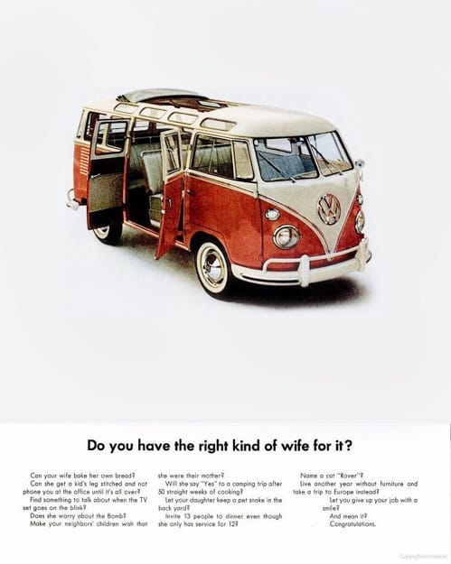

The same
There's something inside you It's hard to explain They're talking about you boy But you're still the same.
Сходил на "Драйв". Хорошее кино.
There's something inside you It's hard to explain They're talking about you boy But you're still the same.
Сходил на "Драйв". Хорошее кино.
Клёви плагин, который меняет иконку тунца на артворк альбома.

Очень приятный альбом, который можно послушать онлайн :)
Ну или вот еще Melt, например :)

Великолепное кино!
Какие же все-таки они охуенные — эти MM-1! Спасибо!!!w

Вообще, эти чуваки оказались как-то нереально круты. Вот, например, ремикс на The Rolling Stones, а вот на Radiohead! Очень классно! :)
Обалденная все-таки штука!

Есть в нем что-то необъяснимо притягательное для меня. А вот тут есть целый сайт с рекламой VW Bus и не только.
Мелкий (2,5) звонит мне по телефону:
— Аллё, папа, мы тут игаем в маcинки!
Звонит, конечно, не сам, ему старший помогает, но удивительно, что он в телефон говорит, слушает меня и отвечает! Совсем большой уже :)